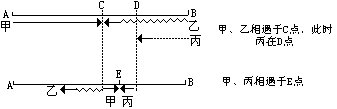
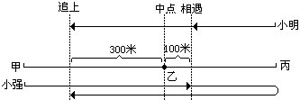
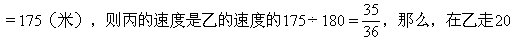
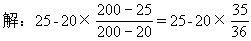
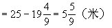
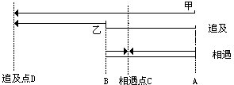
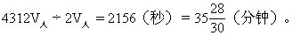

第七讲 行程问题
这一讲中，我们将要研究的是行程问题中一些综合性较强的题目.为此，我们需要先回顾一下已学过的基本数量关系：
路程=速度×时间；
总路程=速度和×时间；
路程差=速度差×追及时间。
例1 小华在8点到9点之间开始解一道题，当时时针、分针正好成一直线，解完题时两针正好第一次重合.问：小明解这道题用了多长时间？
分析 这道题实际上是一个行程问题.开始时两针成一直线，最后两针第一次重合.因此，在我们所考察的这段时间内，两针的路程差为30分格，又因
分格/分钟，所以，当它们第一次重合时，一定是分针从后面追上时针.这是一个追及问题，追及时间就是小明的解题时间。
例2 甲、乙、丙三人行路，甲每分钟走60米，乙每分钟走50米，丙每分钟走40米.甲从A地，乙和丙从B地同时出发相向而行，甲和乙相遇后，过了15分钟又与丙相遇，求A、B两地间的距离。
画图如下：

分析 结合上图，如果我们设甲、乙在点C相遇时，丙在D点，则因为过15分钟后甲、丙在点E相遇，所以C、D之间的距离就等于（40＋60）×15=1500（米）。
又因为乙和丙是同时从点B出发的，在相同的时间内，乙走到C点，丙才走到D点，即在相同的时间内乙比丙多走了1500米，而乙与丙的速度差为50-40＝10（米/分），这样就可求出乙从B到C的时间为1500÷10＝150（分钟），也就是甲、乙二人分别从A、B出发到C点相遇的时间是150分钟，因此，可求出A、B的距离。
解：①甲和丙15分钟的相遇路程：
（40＋60）×15=1500（米）。
②乙和丙的速度差：
50-40=10（米/分钟）。
③甲和乙的相遇时间：
1500÷10=150（分钟）。
④A、B两地间的距离：
（50＋60）×150＝16500（米）＝16.5千米。
答：A、B两地间的距离是16.5千米.
例3 甲、乙、丙是一条路上的三个车站，乙站到甲、丙两站的距离相等，小强和小明同时分别从甲、丙两站出发相向而行，小强经过乙站100米时与小明相遇，然后两人又继续前进，小强走到丙站立即返回，经过乙站300米时又追上小明，问：甲、乙两站的距离是多少米？
先画图如下：

分析 结合上图，我们可以把上述运动分为两个阶段来考察：
①第一阶段——从出发到二人相遇：
小强走的路程=一个甲、乙距离+100米，
小明走的路程=一个甲、乙距离-100米。
②第二阶段——从他们相遇到小强追上小明，小强走的路程=2个甲、乙距离-100米+300米=2个甲、乙距离+200米，
小明走的路程=100+300=400（米）。
从小强在两个阶段所走的路程可以看出：小强在第二阶段所走的路是第一阶段的2倍，所以，小明第二阶段所走的路也是第一阶段的2倍，即第一阶段应走400÷2＝200（米），从而可求出甲、乙之间的距离为200＋100=300（米）。
解略。
例4 甲、乙、丙三人进行200米赛跑，当甲到终点时，乙离终点还有20米，丙离终点还有25米，如果甲、乙、丙赛跑的速度都不变，那么当乙到达终点时，丙离终点还有多少米？
分析 在相同的时间内，乙行了（200-20）=180（米），丙行了200-25



例5 甲、乙二人分别从A、B两地同时出发，如果两人同向而行，甲26分钟赶上乙；如果两人相向而行，6分钟可相遇，又已知乙每分钟行50米，求A、B两地的距离。
先画图如下：

分析 若设甲、乙二人相遇地点为C，甲追及乙的地点为D，则由题意可知甲从A到C用6分钟.而从A到D则用26分钟，因此，甲走C到D之间的路程时，所用时间应为：（26-6）=20（分）。
同时，由上图可知，C、D间的路程等于BC加BD.即等于乙在6分钟内所走的路程与在26分钟内所走的路程之和，为50×（26＋6）=1600（米）.所以，甲的速度为1600÷20＝80（米/分），由此可求出A、B间的距离。
解：50×（26+6）÷（26-6）=50×32÷20＝80（米/分）
（80+50）×6＝130×6=780（米）
答：A、B间的距离为780米。
例6 一条公路上，有一个骑车人和一个步行人，骑车人速度是步行人速度的3倍，每隔6分钟有一辆公共汽车超过步行人，每隔10分钟有一辆公共汽车超过骑车人，如果公共汽车始发站发车的时间间隔保持不变，那么间隔几分钟发一辆公共汽车？
分析 要求汽车的发车时间间隔，只要求出汽车的速度和相邻两汽车之间的距离就可以了，但题目没有直接告诉我们这两个条件，如何求出这两个量呢？
由题可知：相邻两汽车之间的距离（以下简称间隔距离）是不变的，当一辆公共汽车超过步行人时，紧接着下一辆公共汽车与步行人之间的距离就是间隔距离，每隔6分钟就有一辆汽车超过步行人，这就是说：当一辆汽车超过步行人时，下一辆汽车要用6分钟才能追上步行人，汽车与行人的路程差就是相邻两汽车的间隔距离。
对于骑车人可作同样的分析.因此，如果我们把汽车的速度记作V汽，骑车人的速度为V自，步行人的速度为V人（单位都是米/分钟），则：
间隔距离=（V汽-V人）×6（米），
间隔距离=（V汽-V自）×10（米），
V自=3V人。
综合上面的三个式子，可得：V汽=6V人，即V人=1/6V汽，则：
间隔距离=（V汽-1/6V汽）×6=5V汽（米）
所以，汽车的发车时间间隔就等于：
间隔距离÷V汽=5V汽（米）÷V汽（米/分钟）=5（分钟）。
（解略）。
例7 甲、乙二人沿铁路相向而行，速度相同，一列火车从甲身边开过用了8秒钟，离甲后5分钟又遇乙，从乙身边开过，只用了7秒钟，问从乙与火车相遇开始再过几分钟甲乙二人相遇？
分析 要求过几分钟甲、乙二人相遇，就必须求出甲、乙二人这时的距离与他们速度的关系，而与此相关联的是火车的运动，只有通过火车的运动才能求出甲、乙二人的距离.火车的运行时间是已知的，因此必须求出其速度，至少应求出它和甲、乙二人的速度的比例关系.由于本问题较难，故分步详解如下：
①求出火车速度V车与甲、乙二人速度V人的关系，设火车车长为l，则：
（i）火车开过甲身边用8秒钟，这个过程为追及问题：故l＝（V车-V人）×8；（1）
（ii）火车开过乙身边用7秒钟，这个过程为相遇问题：故l=（V车+V人）×7.（2）
由（1）、（2）可得：8（V车-V人）＝7（V车+V人），
所以，V车=l5V人。
②火车头遇到甲处与火车头遇到乙处之间的距离是：
（8+5×6O）×（V车+V人）=308×16V人=4928V人。
③求火车头遇到乙时甲、乙二人之间的距离。
火车头遇甲后，又经过（8+5×60）秒后，火车头才遇乙，所以，火车头遇到乙时，甲、乙二人之间的距离为：4928V人-2（8＋5×60）V人=4312V人。
④求甲、乙二人过几分钟相遇？
